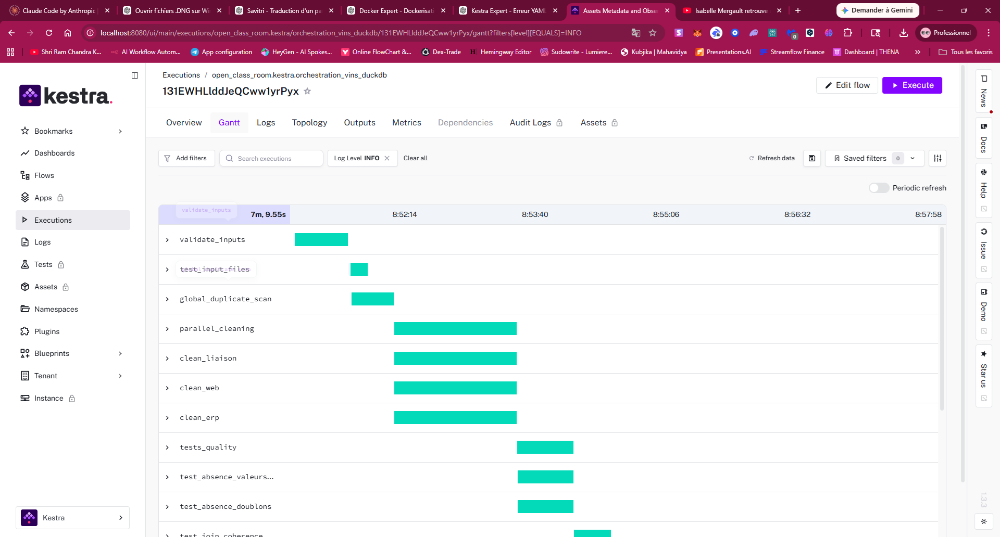

Conception de pipeline data modulaire
Mise en Å“uvre: decomposition du traitement en phases explicites avec branches paralleles ERP/WEB/LIAISON
Valeur ajoutée: meilleure lisibilite du flux et evolution plus simple du pipeline
Automatiser et industrialiser la réconciliation de données ERP, WEB et liaison pour fiabiliser les analyses commerciales et la segmentation produits

Mise en Å“uvre: decomposition du traitement en phases explicites avec branches paralleles ERP/WEB/LIAISON
Valeur ajoutée: meilleure lisibilite du flux et evolution plus simple du pipeline
Mise en œuvre: verification systematique des doublons, valeurs critiques, jointures et intégrité des sorties
Valeur ajoutée: reduction du risque d'analyse métier basee sur des données incohérentes
Mise en œuvre: flow Kestra planifie, execution rejouable, suivi des étapes via vues Topology et Gantt
Valeur ajoutée: passage d'un traitement manuel à un processus gouvernable et pilotable
Mise en Å“uvre: consolidation des sources, calcul du CA par produit et segmentation premium/ordinaires
Valeur ajoutée: acceleration de la production de rapports pour les responsables produits
Mise en œuvre: README operationnel, support PDF et diagramme d'architecture/flux détaillé
Valeur ajoutée: transfert de connaissance facilite pour reprise, audit et communication
Automatiser et industrialiser la réconciliation de données ERP, WEB et liaison pour fiabiliser les analyses commerciales et la segmentation produits
Pipeline DuckDB/Pandas, workflow Kestra orchestre, controles qualité integres, exports analytiques Excel/CSV, supports de diagrammes et presentation